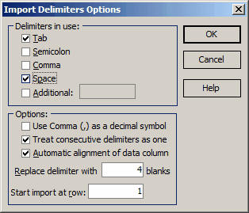

Data Import Options

To select delimiters, check the appropriate boxes in the Delimiters in Use frame. If you need to specify an additional delimiter that is not present in the list, check the Additional box and type the desired delimiter in the edit window. For example, you can add a colon to the list of delimiters as shown above.
In some European countries, a comma (,) is used as the decimal symbol in the default Windows settings. However, OptiLayer consistently uses a period (.) as the decimal symbol, as this is more suitable for scientific applications. During the import procedure, you may need to change this setting to use a Comma (,) as the decimal symbol when extracting numerical data from a text file.
Depending on the type of the input ASCII file, you may want to skip or import empty data fields that occur between delimiters. You can set the desired mode by using the Treat consecutive delimiters as one checkbox.
The Automatic Alignment of Data Columns option enables users to properly align text in the input window, making it easier to select and import data. Additionally, you can manually align columns by expanding delimiters into sequences of blanks, similar to how text editors expand Tab symbols. To set the desired width for the delimiter expansion, use the Replace delimiter with… blanks field.
Since ASCII files may contain headers preceding the actual data, it is often convenient to skip several lines of text. To specify the starting point for data import, enter the desired row number in the Start import at row edit box.